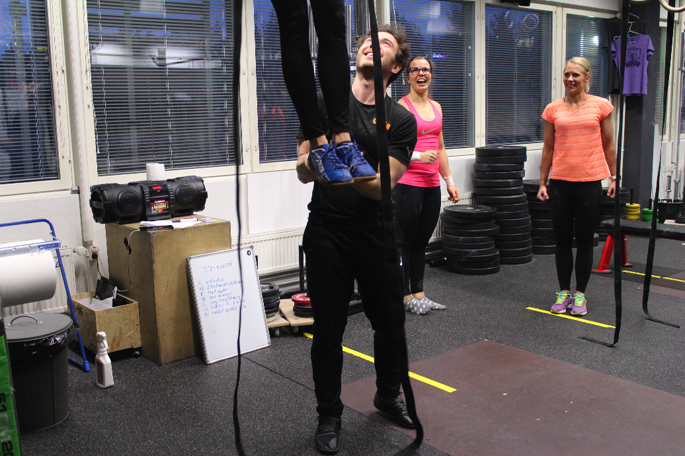
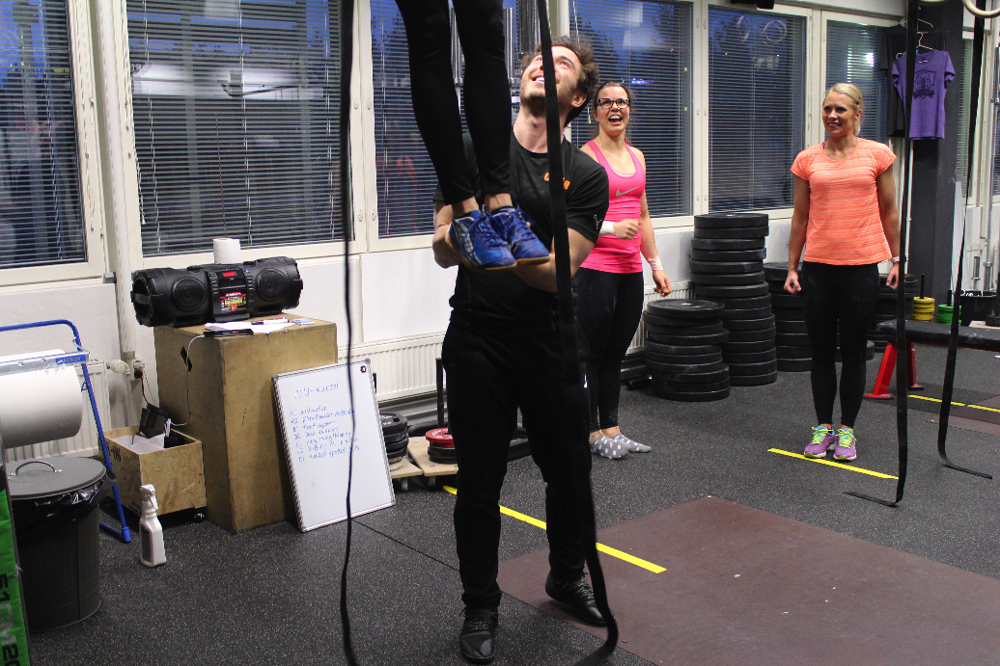

Valmennus

 

Personal Training/yksilövalmennus
Teen yrittäjänä personal trainerin valmennustyötä Helsingissä Stadifitillä (Bulevardi 54), sekä Espoossa Valmennuskeskus Newtonilla (Nuijalantie 13). Vapaita PT-aikoja on tällä hetkellä jäljellä muutama.
Yksilövalmennuksen pääpaino on monipuolisessa harjoittelussa, joka yhdistelee kehonpainolla ja tangolla tehtävää harjoittelua, ”best tools for the job”. Maailman vahvimmat ylävartalot löytyvät voimistelijoilta, ja vastaavasti vahvimmat alavartalot painon- ja voimannostajilta. Vahvan kehon lisäksi kestävyys- ja liikkuvuusharjoittelu täydentävät harjoittelun kolme painopistealuetta.